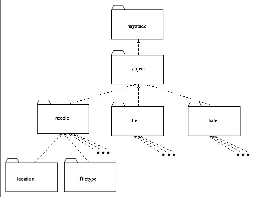

Before we begin the discussion of specific interfaces and class
implementations, it is important to have a high level view of the
different objects in the HDM. We also wish to describe the naming
convention for HDM objects more fully. Figure  represents the package hierarchy for HDM objects. There are three
important terms we use below: interfaces, classes, and packages.
Interfaces define (but do not implement) a set of APIs or
specifications. For example, we can have an interface called
Drawable which has the method drawMe(). All objects
that implement Drawable are then expected to implement (or
are forced to in Java) to implement the drawMe() method.
Classes are the objects that implement any set of
interfaces
represents the package hierarchy for HDM objects. There are three
important terms we use below: interfaces, classes, and packages.
Interfaces define (but do not implement) a set of APIs or
specifications. For example, we can have an interface called
Drawable which has the method drawMe(). All objects
that implement Drawable are then expected to implement (or
are forced to in Java) to implement the drawMe() method.
Classes are the objects that implement any set of
interfaces . Finally
packages provide a convenient means of clustering related
interfaces and packages. For example, in Haystack all classes and
interfaces related to the HDM reside in one package
(haystack.object), and all classes and interfaces related to
services in another (haystack.service).
. Finally
packages provide a convenient means of clustering related
interfaces and packages. For example, in Haystack all classes and
interfaces related to the HDM reside in one package
(haystack.object), and all classes and interfaces related to
services in another (haystack.service).
The four important HDM items are:
). Classes that implement this object directly
usually reside in the haystack.object package.). Classes that
implement this object reside in the haystack.object.tie
package.).
Classes that implement this object reside in the
haystack.object.needle package.). Classes
that implement this object reside in the
haystack.object.bale package.

Figure: A UML diagram of the Haystack object package structure.
It is possible that in the future new core packages will defined to encapsulate other functionality. However, the framework defined for HDM objects makes this a trivial step.